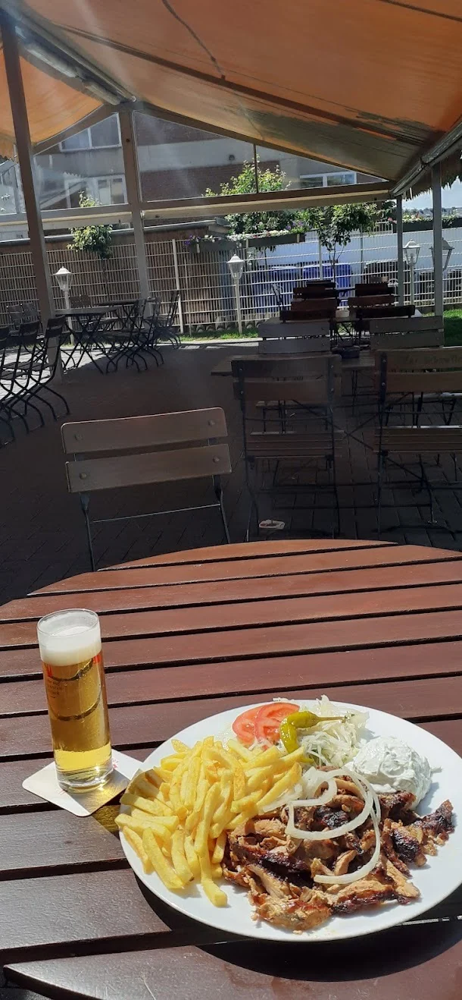
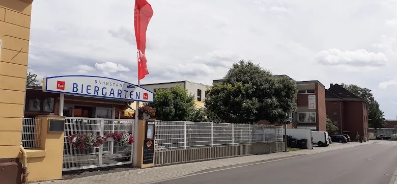
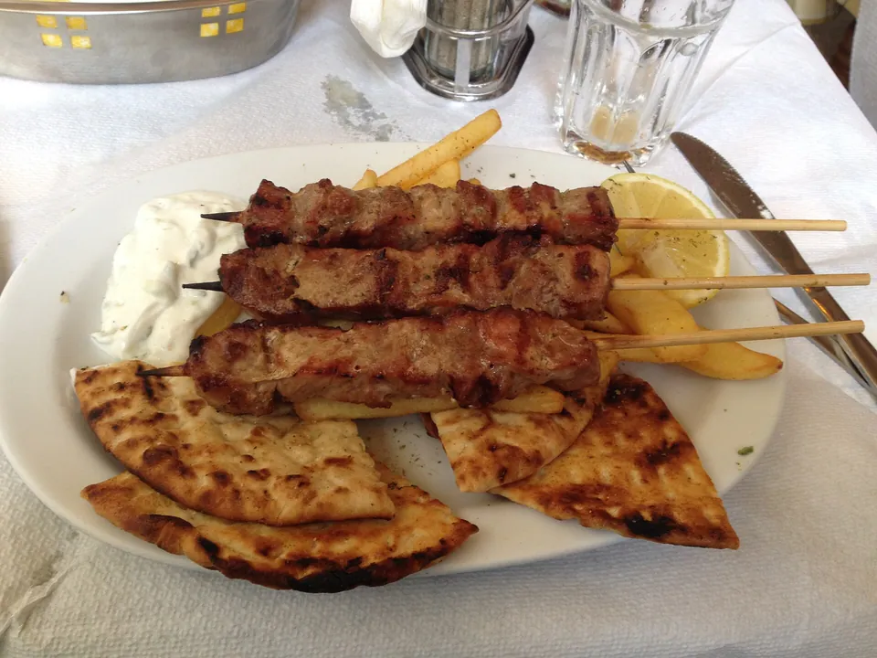
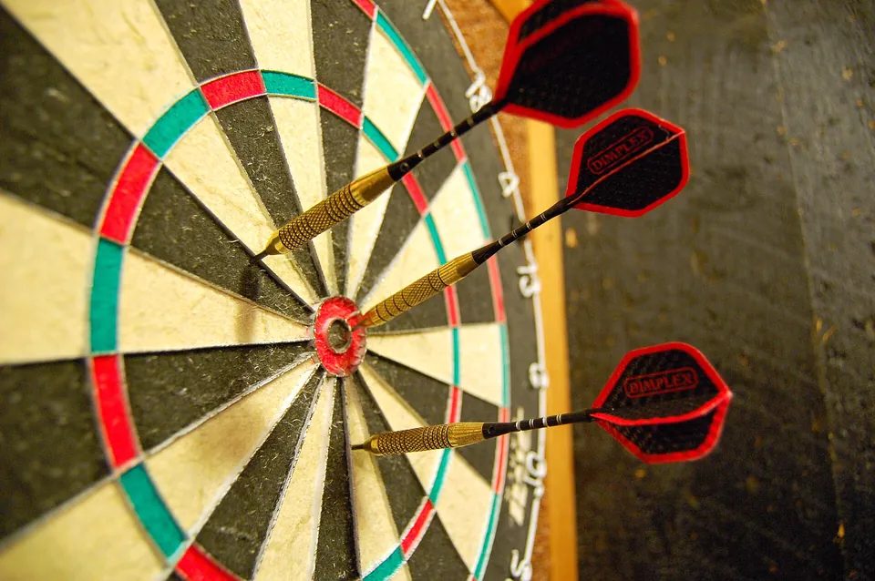
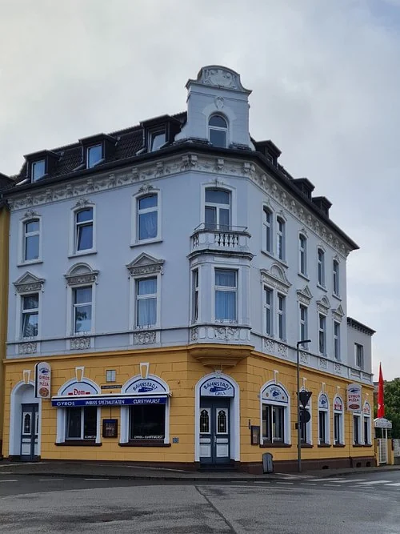

Griechischer Imbiss & Biergarten · Leverkusen-Opladen
Gyros. Kölsch. Biergarten.
„Kali mera, alles klar?!“
Griechischer Grill und Imbiss mit Biergarten, direkt am Bahnhof Opladen. Zum Hieressen, draußen sitzen oder Mitnehmen.
Hier gibt es die beste Gyros Pita von Welt!
Gleis 3 · Draußen
Biergarten unter der Markise
Montag bis Samstag
Rasen, Sonnendach, Laternen – und ein kühles Kölsch. Draußen gibt es eine eigene Biergarten-Karte.
Der Biergarten erinnert an die Zeit, als nebenan noch das Bahnwerk lief und das Haus „Zur Schwelle“ hieß. Abends sitzt Stavros oft selbst draußen und erzählt eine Bahnstadt-Geschichte.



Biergarten · Mo–Sa 17–22 Uhr
Tisch im Biergarten reservieren
Sagen Sie uns, wann Sie mit wie vielen Leuten kommen. Wir bestätigen Ihre Reservierung telefonisch oder per E-Mail.
- Ohne Reservierung? Kein Problem – freie Tische gibt es auch spontan.
- Heute noch? Rufen Sie am besten direkt an: 02171 80154
- Große Runde ab 12 Personen? Bitte kurz telefonisch absprechen.
Gleis 2 · Theke
Vier Scheiben, ein Treffpunkt
Vier Dartscheiben, kühle Getränke und Gyros vom Spieß. Hier trifft man sich auf eine Runde – oder zwei.
● Fan-Treff
Treffpunkt vor dem Spiel
Vor den Spielen treffen sich bei uns einige Bayer-04-Fans auf ein Gyros und ein kaltes Getränk, bevor es Richtung Stadion geht.
Spiele werden bei uns nicht übertragen. Größere Runden melden sich am besten vorher: 02171 80154

4 Dartscheiben
Eine Runde geht immer.
Zwischen zwei Würfen
Currywurst, Gyros, Pizza.
Kühl aus der Flasche
Kölsch, Pils, Weizen und griechisches Mythos, dazu Wein und Longdrinks.
Google-Bewertungen
Das sagen unsere Gäste
★★★★★
Immer wieder gerne hier, die Küche ist ausgezeichnet und der Chef ist ein echt toller Typ. Die freundliche Bedienung darf man natürlich auch nicht vergessen ✌🏻
★★★★★
Hatten Gyros-Pommes bestellt. Das Fleisch ist sehr lecker und die Pommes sind dünn und knusprig – so wie Pommes sein sollen. Das Tsatsiki war ebenfalls sehr lecker – es schmeckt überall anders, was auf Frische hindeutet. Das Essen wurde uns auch schnell gebracht. Wir kommen gerne wieder.
Bahnstadt-Geschichte
Früher Schwelle, heute Grill
Zur Schwelle
Opladen war eine Eisenbahnerstadt. Gleich nebenan lag das Ausbesserungswerk – und die Gaststätte an der Lützenkirchener hieß passend „Zur Schwelle“.
Neue Bahnstadt
Das Werk ist Geschichte, auf dem Gelände wächst die Neue Bahnstadt. Aus der Schwelle wurde der Bahnstadt Grill – der Biergarten ist geblieben.
Ein Grieche bleibt ein Grieche
Stavros steht selbst am Drehspieß. Das Gyros ist außen knusprig und innen saftig, Tzatziki und Krautsalat sind hausgemacht – für Stammgäste aus Opladen genauso wie für Pendler vom Bahnhof nebenan.

Wann hat der Bahnstadt Grill geöffnet?
Montag bis Samstag von 11:30 bis 21:00 Uhr. Sonntag ist Ruhetag. Der Biergarten hat Montag bis Samstag von 17 bis 22 Uhr geöffnet.
Wo liegt der Bahnstadt Grill?
An der Lützenkirchener Straße 12 in 51379 Leverkusen-Opladen, am östlichen Ende der Bahnhofsbrücke – vom Bahnhof Opladen sind es nur wenige Minuten zu Fuß. Parkplätze gibt es vor Ort.
Kann ich einen Tisch im Biergarten reservieren?
Ja. Nutzen Sie das Reservierungsformular auf dieser Seite oder rufen Sie an: 02171 80154. Ohne Reservierung finden Sie meist auch spontan einen Platz.
Gibt es Essen zum Mitnehmen?
Ja, alle Gerichte gibt es auch zum Mitnehmen – von der Gyros Pita bis zur Pizza. Am schnellsten geht es, wenn Sie vorher anrufen.
Gibt es vegetarische Gerichte?
Ja, zum Beispiel die Gemüsefrikadelle im Pita-Brot, vegetarische Pizzen, gefüllte Weinblätter, Salate und hausgemachten Tzatziki.
Werden Fußballspiele übertragen?
Nein. Vor den Spielen treffen sich bei uns aber einige Bayer-04-Fans auf ein Gyros und ein kaltes Getränk, bevor es zum Stadion geht.
Endstation Hunger
Lützenkirchener Str. 12
51379 Leverkusen-Opladen · direkt an der Bahnhofsbrücke
Mo–Sa 11:30–21:00, Sonntag Ruhetag